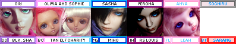

around 2007-2008 I was super interested in visual kei. I spent my days dreaming of miyavi and gackt and searching deviantart and other online art communities for whatever inspired me. i came across this photo on deviantart while searching for vkei. i was just a little smitten. july 23, 2008 was the day I discovered DOD Ducan and the beginning of the end.
i spent the next few years mopping floors, collecting christmas and birthday money, and doing anything I could to buy dolls. I was lucky to be in a pretty good situation where after a few months I was able to afford my first doll. My mom was very supportive of me getting cute girl dolls (not so much the boys) and helped me a lot. not everyone is so lucky!
my tastes started to change as i grew out of being a teen and i started to highly prefer girl dolls. i started noticing DDs as well! they didnt really look good until around 2011 or so. i tried to sell a few of my dolls to buy new dolls but i didnt really find buyers. Now I would prefer to make more money if i want other dolls. i am thankful almost all of my previous dolls never found buyers. i've had so many memories with them that i would be sad to not have them now
i didn't really have any income during college so i didn't get many dolls during that time. i don't call it a "hiatus" or anything since i never stopped loving them and playing with them despite not buying anything or posting online.
I had a wonderful meet up group called Inland Northwest Resin (INWR)! We had a facebook page and our own forum! We had so many fun meetups and it was just about the first time in my life my mom would let me go off and do things without her.
It was so fun to gush over the new dolls coming out and try out other dolls and see if I like them enough to want to own them myself. Most of us got into a weird obsession with Bluefairy together and probably had the largest number of BlueFairy dolls per capita back in the day. Together we went to gardens, cafes, restaurants, and had dolly "spa" meets.
I got to attend multiple RadCons with these girls as well as Uncanny Dream 2011, PNW BJD Expo 2013 and 2014.
thank you to all my doll comm for spending time with me over the first years! Rei, Jenn, Bri, I miss you all so much! and thank you to Amanda for listening to me obsess over them for more than a couple years! also sorry for getting you into an expensive hobby :p
If you think these girls were as catty as the girls on /cgl/ you are dead wrong. It was more tame than you'd expect.
around 2010 to 2015, den of angels was invite only. current users could invite others, but their account was on the line if they invited someone who had an account already or had been banned.
the reason to close off the forum could have been spam bots or scammers but i dont believe the true reason was ever announced. this did happen before the recast epoch
the name Den of Angels is a mistranslation of Tenshi no Sumika and here's my citation
This forum is completely gone, just like DoD and many others. It was an 18+ forum based on erotica, so of course they had some funky photos... I may have collected a few of the worst I could find while it was still up. this link is incredibly not safe for life. i previously said this forum was resinality, but i am fairly sure it was condoll after all.
back around 2009, a friend in my meetup group told us that Portland had not one, but two separate meetup groups! one had only volks elitists and did not allow any dolls but volks, and the other did not allow volks dolls, but allowed everything else. I have found no proof of this rumor being true. who knows what group people who owned both would join!
Chicabi used to go by "Chica Bonita" until they googled their own name.
I used to really not like Volks dolls when I first started researching BJDs. How have they become one of my favorites now?? Faceups.
Early Volks faceups were extremely basic and plain! Check out the standard models up to the 2010 versions. Sure they look fine, but they dont look $700 fine. By this time, other companies were offering amazingly beautiful default faceups. Volks dolls just looked like a joke next to them.
Around 2011 or so, Volks stepped it up. The 2014 standard models are lovely! You can see this in the Dollfie Dream releases as well, but DDs also had a sculpting style upgrade as well. I could finally see the beauty in a Volks doll without having to look up customized ones.
Now the old faceups look really classic. I think I'd still probably wipe one though.
anything I write here is probably spicier than anything posted on Den of Demons
Aeryn had tons of boys every teenage girl had a crush on! She has a bunch of stories about her dolls' characters but you can skip those if you're over 18.
Sold a recast Ryoya Kanoe to Knibitz (probably unknowingly). A few months later, she recieved a marketplace ban (unrelated to the recast incident) from DoA and hasn't really been active since. She did that thing where you disappear off the face of the Earth with multiple open transactions.
She was once quite a popular photographer and faceup artist with many beautiful boys. Sisters with gardenofmoons/frozen wings.
She once had 2 doll heads run over by a car (DOA link).
US faceup artist and photographer. Has a darker, emo style that screams late 2000's. Also goes by asainemuri.
Indonesian photographer. Loves men and you can tell. Total fujoshi and I say that in the nicest way possible.
Faceup artist, photographer, and pioneer of the oversized sweater, yoga pants, alpaca wig minifee movement. I'm not sure any other artist has had such an impact on the western community.
She doesn't participate in BJDs anymore, but has moved on to other art projects. Her influence will likely last forever though.
recently, many new doll collectors coming over from instagram have listed "culur theory ery" as their grail doll. i imagine this has to do with a disinterest in research.
culur and her dolls are all banned on DoA. You cannot mention or show a photo of a culur theory doll there. you might think "oh those awful mods are just ban happy!" but culur did bring this all upon herself. culur was banned from DoA for posting a photo her recast doll there. she claimed she didnt think anyone would notice.
around the time of culur's ban, DoA was invite only for quite a while. new users had to be invited by a current user to make an account and the current user would be responsible for the user invited. culur was found to be asking multiple users to invite her back to doa. doing so would have gotten them banned as well.
there was once a big fuss when culur tried to sell her recast doll without mentioning that it was a recast. she said she didnt think it was important information and that no one would assume it is legit.
My first memory of culur was at pnw bbq expo. I saw a young girl with a gorgeous minifee. I found out soon after it was Culur and her recast. She didn't really mind that bringing a recast was against the rules of the expo.
She posted tons of teen drama photostories starring her minifees and a few other minis. The series was called "beneath the midnight sun"
These dolls were all super popular at some point in the English speaking doll community, so you'd see a lot of them around! Most of my info was stolen or inspired by this thread on DoA.
The "El Army" is no joke!
I'm not sure if everyone and their dog even had one, but there are even cosplays of this doll.
The first super dollfie released by Volks. Her mouth is a little lopsided and they make sure to keep it that way every time they resculpt it in another size.
After all these years, she is still extremely popular and iconic!
I can't identify these ones by first glance but people would not stop talking about them before 2010! They were once one of the most expensive dolls you could own. They were the first of the 70cm (uncle) range dolls.
In the olden days, you used to have to order Dollshe dolls through Luts, then Tensiya, a company run by Anu. At least internationally, they were not sold regularly and were pretty hard to get ahold of! You'd often see them going for $2000+ USD.
The abbreviation for sleeping heads, SA, stands for slack afternoon.
Highly sought after in the early days and was extremely tough to obtain. You had to enter a lottery for one through a proxy! Secondhand, Unoa girls were around $700. Access to Mandarake and Dollyteria as well as Unoalchemy lowered that price a ton. Still very popular and much easier to get now!
So many people seemed to have male versions of this doll. Sand off the chest and you're good to go. Technically an SD sized doll, but pretty significantly shorter than most at 52cm tall!
Andreja (Nicolle's Dreams) had and painted one and the rest was history. Probably the first doll a lot of people saw through Youtube or Instagram. If you want to gain a large social media following, this is your girl.
originally a female sculpt with some giant lips. you'll see most of them as boys though.
Everyone used to have a goofy little image in their signature showing the dolls they had. Angelden has a little more info! Unfortunately all the images are gone, but there's some archived! There were many more non-Volks icons as well and many can be found here on livejournal. Here's the last one I made for my dolls in 2010. It's over DoA's signature size limit!!
here's one I made today using the livejournal link! it's not accurate yet and i have too many dolls
When I'm on the other side of the state, I often stop by a consignment shop in the same mini-mall as a goodwill. There's a ton of booth so you always seem some fun things and some dumb things. My weirdest find there was two BJDs on July 9th, 2018.
A vendor had an SD sized boy (1 2 3) and a DC Elizabeth (1 2) up for sale. The boy was $149.99 and the Elizabeth was $299.99. Neither had a box and for these prices, I assume these are both recasts. They're still a crazy find! I would have picked up the boy to investigate but if I were to break him, I would be very upset to have to pay for a $150 recast!!
A Redditor found one of them too and made a post. I'm still laughing at all the users telling her it was a great deal and to run back to buy her. She didn't seem to have seen the boy though! I never saw the boy again, but I kept seeing Elizabeth for a while. She's gone now but I always check this booth to see if the vendor put up any more crazy cr*p up for sale.
Because of these photos and links (and also one more link elsewhere), I could be banned from DoA if I linked my website. It really is too bad, since I would love to share this site.
everything changed when recasts became easily accessible around 2012. this also happened to occur around the rise of tumblr.
recasts used to be something to fear. they meant being scammed. I dont believe anyone was looking to buy a recast in the early days. posts discussing recasts on DoA weren't deleted, as long as recasts were portrayed negatively. you can still find many posts about these in the discussion archives.
the big change occured when people found out you could message luo over skype, send him some money over paypal, and get a doll in a week. he didnt have a website or a storefront, but a facebook profile where he updated the new dolls he made molds of. there were some other recasters, but some made recasts of recasts which had serious shrinkage and detail loss.
at this time, the community was moving from forums to social media platforms, like facebook and tumblr. these platforms didn't villainize recasters so everyone was able to speak freely about them. a forum called castaways also appeared, which was recast friendly.
this caused the largest split ever in the BJD commuity. the entire online community was split into pro-artists (or anti-recasts) vs pro-recasts. the fight of volks elitists vs others was a joke compared to this. many internet users started putting their stance on the issue in their social media bios. nearly every discussion devolved into a fight about recasts.
november 16th, 2014 became the first pro bjd artist day, where everyone could virtue signal their support of the doll artists by posting a photo of their dolls saying "i'm pro artist!!!!!" This continued for a few years and has slowed down, but people stance still remains in their social media bios. the fight still occurs everywhere it gets the chance.
During the DoA anniversary triathlon, everyone was discussing and laughing at the entries on 4chan's /toy/. Some were good and some were good for a laugh. An anon who was also laughing about the bad entries posted their own entry in the contest which later won the contest.
someone (who had a stick up their butt) notified the mods that the winner of the contest had been shit talking other entrants on 4chan. Botflybaby admitted to the posts and the mods decided to revoke her prize because of bad sportsmanship.
the moral of the story is either dont make fun of peoples work or post your own dolls in a separate post. you can decide that one yourself.
A DoA user made a thread asking if it would be too bothersome to ask BJDivas for a refund for their doll they had been waiting for over 2 years for. The overwhelming majority of the thread said yes, of course. A few people came out of the woodwork with a few complaints about BJDiva's service. This includes Zest and Zest had some big complaints.
BJDivas decided 2 of the posts in this thread were slanderous. They made a post on facebook about how the posts were completely untrue (one of the posts is pretty speculative) and said they had asked the mods to remove both of these posts. These posts have not been removed and the thread was locked.
BJDivas decided they no longer wanted to work with Zest. They transferred his preorder back to Dollzone and sent him an email about it. Zest posted in the Dollzone waiting room about this and BJDivas responded, ending up in the thread becoming heated and locked for a month. BJDivas took the drama over to their public facebook page where they named and shamed Zest, including his real name. BJDivas claims they only posted his real name because he had already posted it.
Zest, with the permission of the mods, wrote and posted a review in the BJDivas DoA feedback thread. BJDivas did not like the review, so they posted a rebuttal and asked the moderators to remove the post. They asked on their private facebook group for people to leave feedback for them in their DoA feedback thread around July 20th, 2021. 33 reviews popped up within the next 2 months, mostly from older orders. Two of these reviews were not positive and BJDivas posted a rebuttal to both. One of them suggests BJDivas is on a witch hunt for all of Zest's lackeys.
In a post on their website, BJDivas even goes as far to blame the DoA mods' unfair judgement on the face they have not donated to them or bought advertising. BJDivas has claimed that Zest sent his personal army after them. Claiming they are receiving death threats, saying someone tried to shut down their website, etc. This could be true, but they have not posted screenshots of anything as far as I can see. They have decided to not press charges against Zest or DoA. Zest says his multiple attempts at contact and chargebacks were due to his order becoming stuck in limbo until he could receive their consent to transfer. Both BJDivas and Zest recieved a 1 month suspension for their argument. BJDivas has recieved a "Dealer Caution" banner as well for their actions.
0/4 0% but I'm not giving up yet! Mother SD will bless me someday. A secret trick for checking if you won early on VolksUSA is to go to your user profile details and check if a "user group" tab shows up. I have yet to confirm this happening (obviously). It's best not to celebrate until you get an email though!
{kind=link}
{kind=link}
{kind=link}
{kind=link}
{kind=link}